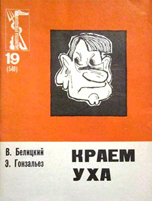
Краем уха
В. И. Белицкий, Э. Ф. Гонзальез
Правда, 1968
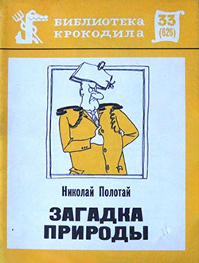
Загадка природы
Н. И. Полотай
Правда, 1970
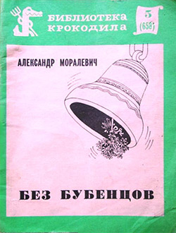
Без бубенцов
А. Ю. Моралевич
Правда, 1972
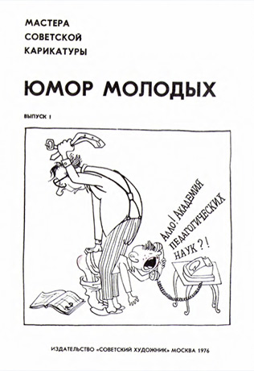
Мастера советской карикатуры. Юмор молодых. Выпуск 1
Советский художник, 1976
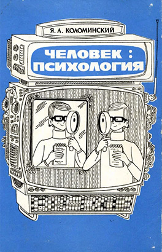
Человек: психология
Я. Л. Коломинский
Просвещение, 1980
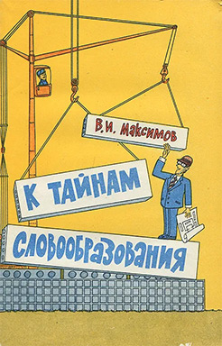
К тайнам словообразования
В. И. Максимов
Просвещение, 1980
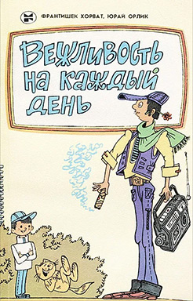
Вежливость на каждый день
Ф. Хорват, Ю. Орлик
Молодая гвардия, 1981
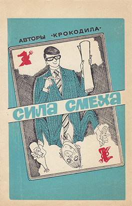
Сила смеха
Е. П. Дубровин, И. И. Левин
Жазушы, 1982
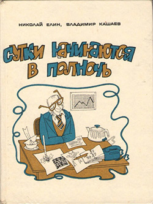
Сутки начинаются в полночь
Н. Л. Елин, В. Г. Кашаев
Советская Россия, 1982
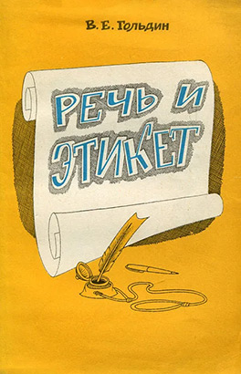
Речь и этикет
В. Е. Гольдин
Просвещение, 1983
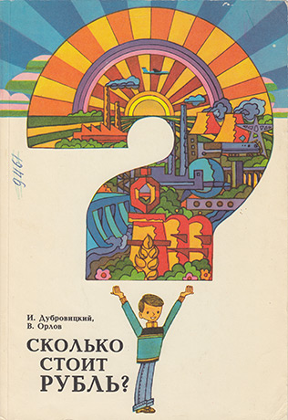
Сколько стоит рубль?
И. В. Дубровицкий, В. В. Орлов
Молодая гвардия, 1983
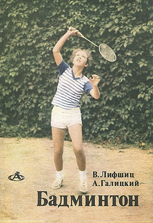
Бадминтон
В. Я. Лифшиц, А. В. Галицкий
Физкультура и спорт, 1984
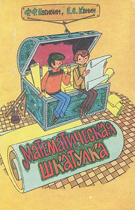
Математическая шкатулка
Ф. Ф. Нагибин, Е. С. Канин
Просвещение, 1984
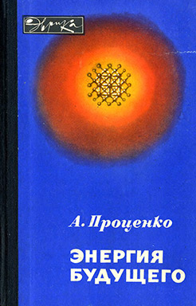
Энергия будущего
А. Н. Проценко
Молодая гвардия, 1985
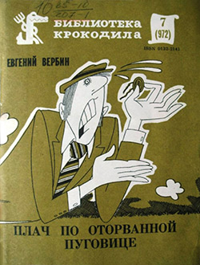
Плач по оторванной пуговице
Е. И. Вербин
Правда, 1985
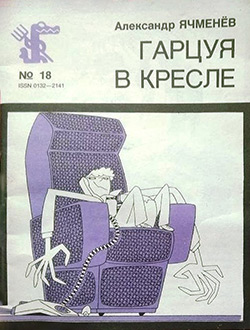
Гарцуя в кресле
А. С. Ячменёв
Правда, 1986
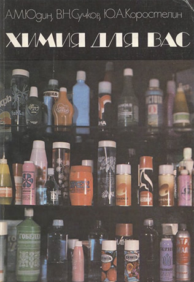
Химия для вас
А. М. Юдин, В. Н. Сучков, Ю. А. Коростелин
Химия, 1986
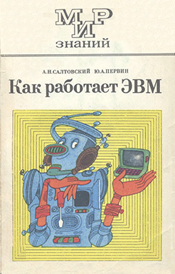
Как работает ЭВМ
А. Н. Салтовский, Ю. А. Первин
Просвещение, 1986
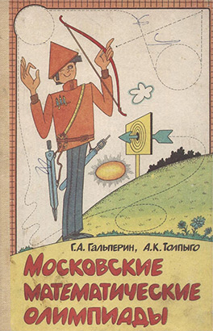
Московские математические олимпиады
Г. А. Гальперин, А. К. Толпыго
Просвещение, 1986
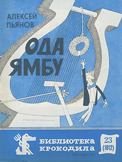
Ода ямбу
А. С. Пьянов
Правда, 1986
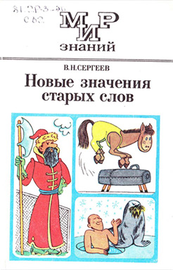
Новые значения старых слов
В. Н. Сергеев
Просвещение, 1987
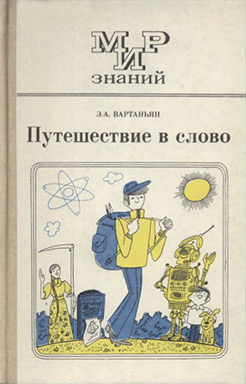
Путешествие в слово
Э. А. Вартаньян
Просвещение, 1987
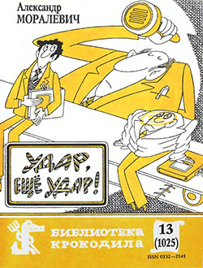
Удар, ещё удар!
А. Ю. Моралевич
Правда, 1987
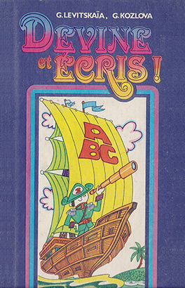
Занимательная орфография (Devine et ecris!)
Г. К. Левицкая, Г. А. Козлова
Просвещение, 1987
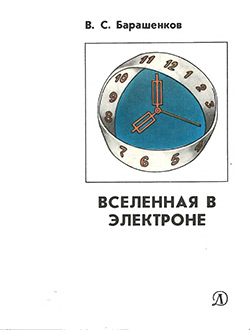
Вселенная в электроне
В. С. Барашенков
Детская литература, 1988
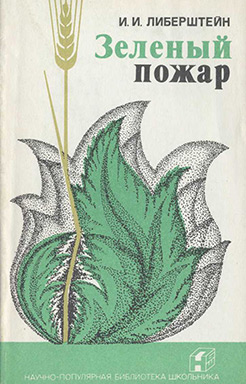
Зелёный пожар
И. И. Либерштейн
Агропромиздат, 1988
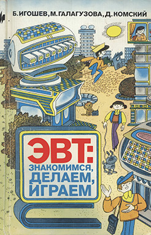
ЭВТ: знакомимся, делаем, играем!
Б. М. Игошев, М. А. Галагузова, Д. М. Комский
Молодая гвардия, 1989
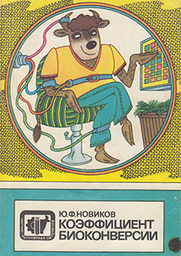
Коэффициент биоконверсии
Ю. Ф. Новиков
Агропромиздат, 1989
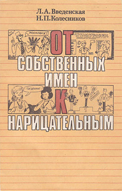
От имён собственных к нарицательным
Л. А. Введенская, Н. П. Колесников
Просвещение, 1989
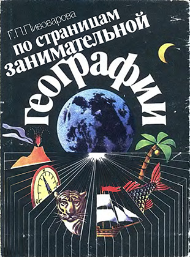
По страницам занимательной географии
Г. П. Пивоварова
Просвещение, 1989
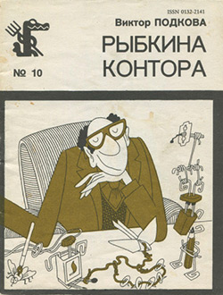
Рыбкина контора
В. П. Подкова
Правда, 1989
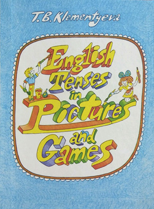
Времена английского глагола в картинках и играх
Т. Б. Клементьева
Просвещение, 1989
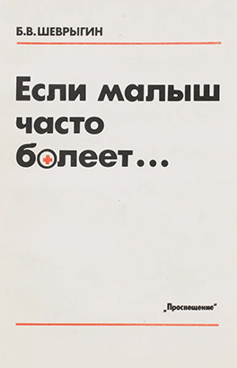
Если малыш часто болеет
Б. В. Шеврыгин
Просвещение, 1990
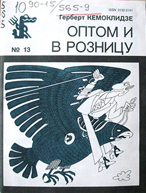
Оптом и в розницу
Г. В. Кемоклидзе
Правда, 1990
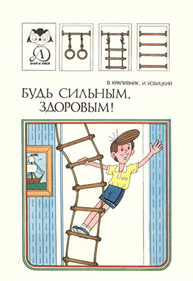
Будь сильным, здоровым!
В. В. Крапивник, И. М. Усвицкий
Детская литература, 1991
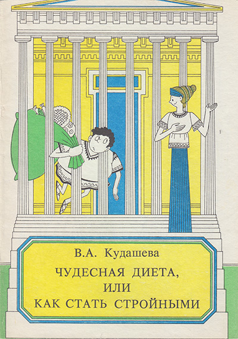
Чудесная диета, или Как стать стройными
В. А. Кудашева
Просвещение, 1991
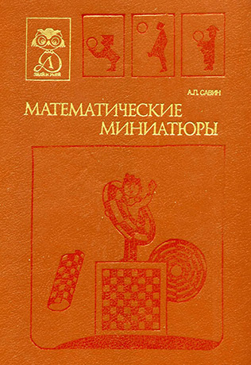
Математические миниатюры
А. Савин
Детская литература, 1991
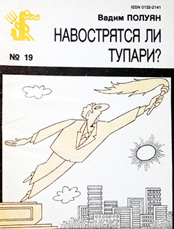
Навострятся ли тупари?
В. П. Полуян
Правда, 1991
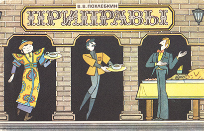
Приправы
В. В. Похлёбкин
Агропромиздат, 1991
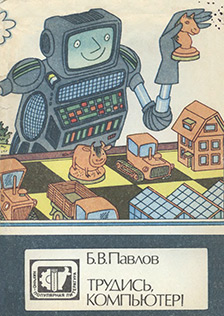
Трудись, компьютер!
Б. В. Павлов
Агропромиздат, 1991
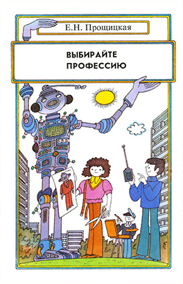
Выбирайте профессию
Е. Н. Прощицкая
Просвещение, 1991
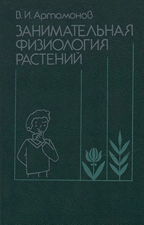
Занимательная физиология растений
В. И. Артамонов
Агропромиздат, 1991
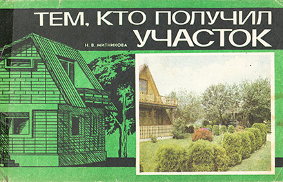
Тем, кто получил участок
Н. В. Митникова
Агропромиздат, 1992
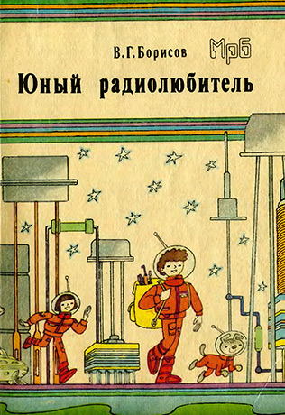
Юный радиолюбитель
В. Г. Борисов
Радио и связь, 1992
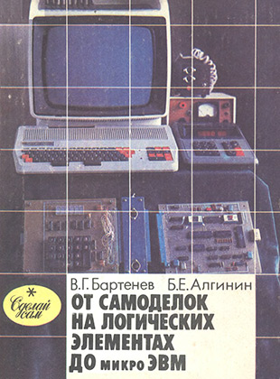
От самоделок на логических элементах до микроЭВМ
В. Г. Бартенев, Б. Е. Алгинин
Просвещение, 1993
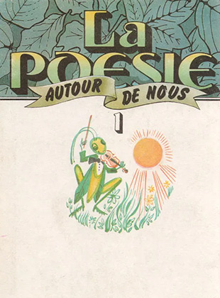
Поэзия вокруг нас (La Poesie Autour de Nous), часть 1
Э. М. Береговская
Просвещение, 1993
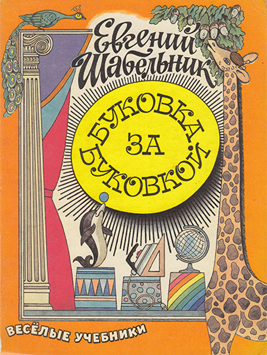
Буковка за буковкой
Е. С. Шабельник
Самовар, 1994
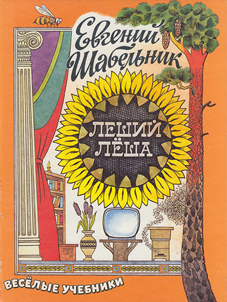
Леший Лёша
Е. С. Шабельник
Самовар, 1994
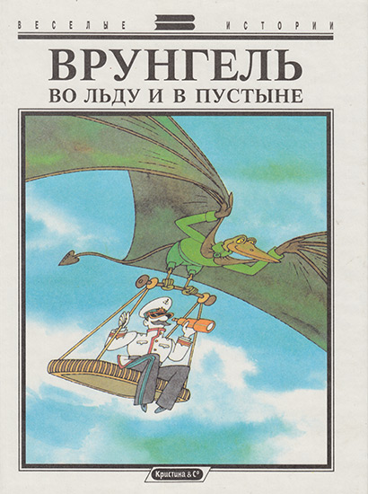
Врунгель во льду и в пустыне
Пересказ И. Гомозковой, М. Шварца
Кристина и К°, 1994
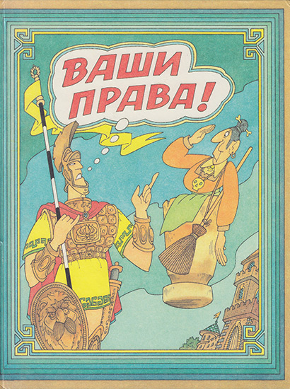
Ваши права!
Е. С. Шабельник, Е. Г. Каширцева
Вита-Пресс, 1996
Права ребёнка
Е. С. Шабельник
Вита-Пресс, 1998
Зачем нужны налоги?
В. А. Рубе, Е. С. Шабельник
Вита-Пресс, 1999
Основы бухучета для школьников
О. Ю. Черкашин
Вита-Пресс, 2000